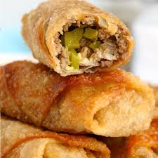

BigMac Egg Rolls!

DESCRIPTION
BigMac Egg Rolls the best way to enjoy all
the great flavors of a classic Big Mac but without
the heavy bun and additives of a regular Big Mac!
taste just like a Big Mac!
INGREDIENTS
- Ground Beef
- Cheese
- Pickle
- Onion
- Sesame Seeds
- Special Sauce - as simple as mixing together
classic condiments - mayo, mustard, ketchup and
relish with a splash of apple cider vinegar
STEPS
- In a medium sized frying pan cook the
ground beef until fully cooked, approximately
10 minutes. Drain the meat. Season with garlic
powder, salt and pepper.
- To assemble the egg rolls place one slice of
cheese in the center. Top with 2-3 spoonfuls of
ground beef, a few pieces of diced pickle and
onion.
- Wet the edges of the egg roll wrapper. Fold in
two opposite corners to the center and then
tightly roll. Repeat with remaining egg roll
wrappers.
- Cook egg rolls in preferred method:
Air fry/Deep fry/Oven